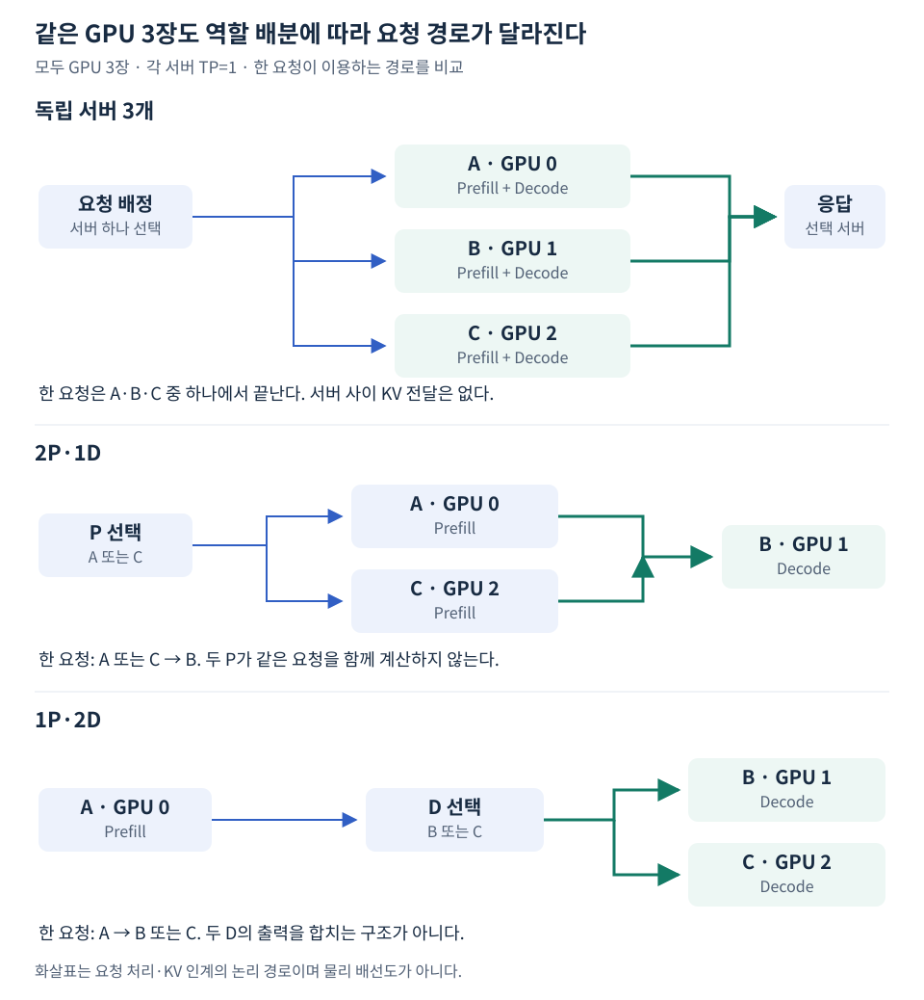

P/D 서버는 별도의 축소 모델이 아니다. 예시의 P와 D는 모두 전체 Qwen3-8B를 실행한다. 서버의 이름, KV 전달 역할, 요청별 실행 지시를 구분해야 일반 요청과 분리 요청이 같은 서버에서 어떻게 동작하는지 이해할 수 있다.
서버 설정은 KV 연결 기능을 준비한다
--kv-transfer-config는 vLLM 실행 옵션이고, 내부 JSON의 kv_connector는 연결 구현을, kv_role은 KV 전달 역할을 지정한다. 다음은 전체 실행 명령이 아닌 관련 옵션 발췌다.
vllm serve Qwen/Qwen3-8B \
--kv-transfer-config '{"kv_connector":"NixlConnector","kv_role":"kv_producer","kv_load_failure_policy":"fail"}'
| 값 | 이 자료에서 사용한 역할 |
|---|---|
kv_producer |
P에서 KV 제공 |
kv_consumer |
D에서 KV 수신 |
kv_both |
C가 서로 다른 요청에서 제공·수신 역할을 수행 |
고정된 vLLM 0.29.0 환경에서 C→B와 A→C를 각각 실행해 두 방향을 확인했다. 다만 C 서버 원본 로그는 kv_both가 deprecated이며 향후 제거될 수 있다는 경고를 포함한다. 새 버전에서 그대로 권장되는 설정이라는 뜻은 아니다. 역할 계약은 해당 버전의 NixlConnector 안내와 설치 소스를 기준으로 확인한다.
요청의 전달 지시와 계산 능력은 다르다
P라는 이름을 붙였다고 그 서버가 Decode 계산을 할 수 없게 되는 것은 아니다. 고정 환경에서 KV 전달 정보 없는 일반 요청을 A·B·C에 보내면 각 서버가 입력 처리부터 생성까지 수행했다. 이것이 동일 서버를 독립 Replica 비교에도 사용할 수 있었던 이유다.
반대로 서버에 kv_both를 설정했다고 요청을 자동으로 분배하거나 상대 서버를 자동 선택하지 않는다. P 요청과 D 요청의 목적지, 응답 메타데이터 연결은 클라이언트 코드가 결정한다.
따라서 여기서의 관찰은 같은 전체 모델 서버가 요청 방식에 따라 일반 생성 또는 KV 제공·수신 흐름에 참여했다는 것이다. 모든 Connector·모든 역할 설정이 같은 방식으로 일반 요청을 지원한다고 확대하지 않는다.
즉, 단독 기준선을 만들 때 반드시 새 서버를 띄울 필요는 없었다. 기존 서버에 KV 전달 지시 없는 일반 요청을 보내면 됐다. 다만 같은 서버에 다른 실험 부하를 겹쳐 넣으면 비교 조건이 달라지므로 각 측정은 분리했다.
두 역할을 할 수 있는 서버 하나로 P와 D의 비율을 바꾼다
예시의 실제 배치는 다음과 같다. 포트는 같은 호스트 안에서 프로세스를 구분하기 위한 값이다.
| 서버 | GPU | HTTP | KV side channel | 설정한 KV 역할 |
|---|---|---|---|---|
| A | 0 | 8100 | 5600 | kv_producer |
| B | 1 | 8200 | 5601 | kv_consumer |
| C | 2 | 8300 | 5602 | kv_both |
C를 추가한 뒤 먼저 C → B와 A → C를 각각 실행했다. 각 수신 측에서 전송 +1건·96.75 MiB·실패 0건을 확인한 뒤 다음 구성을 비교했다.

2P·1D에서 한 요청을 두 P가 동시에 계산하는 것은 아니다. 조정 코드가 P 하나를 선택한다. 1P·2D도 두 D의 출력을 합치는 것이 아니라 한 D를 선택한다. 서버가 여러 개라는 사실과 한 요청의 계산을 여러 GPU가 나눠 맡는 TP는 다르다.
kv_both의 두 역할을 각각 확인한 것과 한 요청 안에서 왕복 전달·멀티턴 재사용까지 확인한 것도 구분한다. 후자는 이 실험에 포함되지 않았다.
TP와도 다른 축이다
TP는 하나의 모델 계산을 여러 GPU에 분할하는 방식이다. P/D는 요청의 계산 단계를 서버 사이에 분리하는 방식이다. 이 예시는 P와 D 각각 TP=1이며 2P·1D는 독립 서버 세 개다.
개념적으로 P와 D의 TP 크기를 다르게 구성할 수도 있지만, KV 분할·배치 형식과 Connector의 호환 지원이 필요하다. P의 TP=1 KV가 아무 설정 없이 D의 TP=4에 바로 맞는다고 가정하지 않는다. 이기종 TP 전달은 이 자료에서 실행하지 않았다.
예를 들어 P가 전체 KV Head를 갖고 D가 Head를 네 조각으로 분담한다면, 수신 측 각 GPU가 자기 담당 범위의 캐시를 사용할 수 있게 매핑해야 한다. 이는 가능한 구조를 설명한 것이며 사용 버전의 모든 모델·TP 조합 지원을 보장하지 않는다.
이 예시처럼 별도 GPU를 배정하면 1P·1D의 기본 연결에는 두 장, 2P·1D와 1P·2D의 비교에는 세 장을 사용한다. TP=4인 D 한 엔진은 “독립 Decode 서버 네 개”와도 다르다. TP의 GPU 배치는 한 물리 호스트일 수도, 지원되는 다중 호스트 구성일 수도 있으므로 TP 숫자만으로 물리 서버 수를 확정하지 않는다.
이전 단원과 GPU 모델이 반드시 같아야 원리를 확인할 수 있는 것은 아니다. 하지만 성능은 하드웨어와 연결 구조의 영향을 받으므로 현재 P/D 비교 안에서는 같은 자원 조건을 맞추고, 다른 GPU에서 얻은 이전 수치와 구조의 우열을 직접 비교하지 않는다.